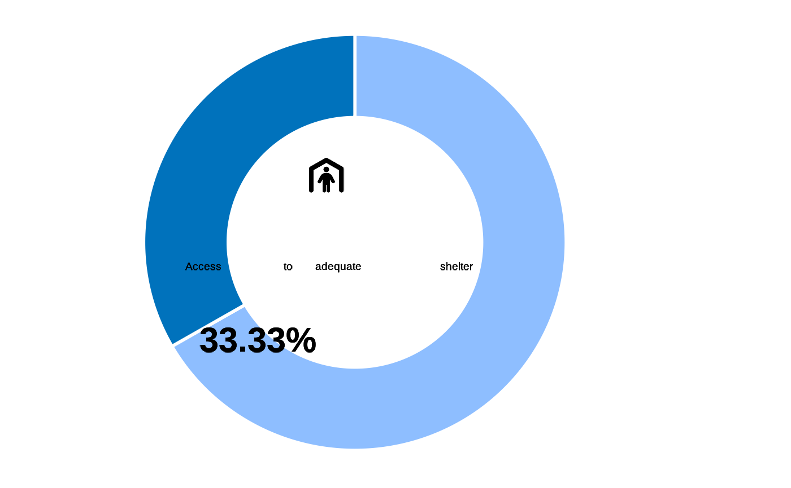

The right to access adequate housing is protected by international law. The concept of "adequacy" means that housing is more than four walls and a roof as indicated in The Sphere Handbook. Habitable housing primarily refers to the fact that the housing should provide protection from cold, damp, heat, rain, wind, and other threats to health, structural hazards, and disease vectors and it should not be overcrowded. As shelter/housing is primarily a contextual element, there may be discrepancies from country to country on how this data is measured.
Adequate shelter is measured based on having improved material for the dwelling as indicated in DHS publication on housing conditions which is also used by MICS6.
Overcrowding is also used which occurs if there are more than three people per habitable room as defined by UN-Habitat.
Formula:
Usage
inter_shelter(
datalist,
mapper = list(hierarchy = "main", variablemap = data.frame(label =
c("What type of dwelling does the household live in?",
"Main material of the dwelling floor", "Main material of the roof",
"Main material of the exterior walls",
"How many separate rooms do the members of your household occupy?",
"What is the total number of persons in this household?"), variable = c("DWE01",
"DWE02", "DWE03", "DWE04", "DWE05", "HH01"), mappattern = c("DWE01", "DWE02",
"DWE03", "DWE04", "DWE05", "HH01")), modalitymap = data.frame(variable = c("DWE01",
"DWE01", "DWE02", "DWE02", "DWE02", "DWE03", "DWE03", "DWE03", "DWE03", "DWE03",
"DWE03", "DWE04", "DWE04", "DWE04", "DWE04", "DWE04", "DWE04"), label =
c("Apartment", "House", "Earth/sand", "Dung", "Other (Specify)", "Metal/tin", "Wood",
"Calamine/Cement fibre", "Ceramic tiles", "Cement", "Roofing shingles", "Cement",
"Stone with lime/ cement", "Bricks", "Cement blocks", "Covered adobe",
"Wood planks/shingles"), standard = c("1", "2", "1", "2", "96", "8", "9", "10", "11",
"12", "13", "10", "11",
"12", "13", "14", "15"), map = c("1", "2", "1", "2",
"96", "8", "9", "10", "11", "12", "13", "10", "11", "12", "13", "14", "15")))
)Arguments
- datalist
A list with all hierarchical data frame for a survey data set. format is expected to match the Excel export synchronized from kobo to RILD and loaded with kobocruncher::kobo_data()
- mapper
a list providing the mapping of the variables used for the calculation - this mapper is potentially to be adjusted in relation with deviation between the the standard XlsForm and the contextualized dataset
Details
*DWE01* = 1,2 &
*DWE02* = 3,4,5,6,7,8,9 &
*DWE03* = 8,9,10,11,12,13 &
*DWE04* = 10,11,12,13,14,15 &
crowding (*HH01*/*DWE05*) \<= 3Adequate shelter is calculated from the main dataset classify as habitable when improved/adequate shelter
Examples
datalist <- kobocruncher::kobo_data( system.file("test.xlsx",
package = "IndicatorCalc"))
#> Warning: Expecting logical in G1286 / R1286C7: got 'no'
mapper <- list(
hierarchy = "main",
variablemap = data.frame(
label = c(
"What type of dwelling does the household live in?",
"Main material of the dwelling floor",
"Main material of the roof",
"Main material of the exterior walls",
"How many separate rooms do the members of your household occupy?",
"What is the total number of persons in this household?"),
variable = c("DWE01","DWE02","DWE03","DWE04","DWE05",
"HH01"),
mappattern = c("DWE01","DWE02","DWE03","DWE04","DWE05",
"progres_groupsize") ),
modalitymap = data.frame(
variable = c( "DWE01","DWE01",
"DWE02","DWE02","DWE02",
"DWE03","DWE03","DWE03","DWE03","DWE03","DWE03",
"DWE04","DWE04","DWE04","DWE04","DWE04","DWE04"),
label = c( "Apartment", "House", # DWE01
"Earth/sand", "Dung", "Other (Specify)", #DWE02
"Metal/tin", "Wood", "Calamine/Cement fibre",
"Ceramic tiles", "Cement", "Roofing shingles",#DWE03
"Cement", "Stone with lime/ cement", "Bricks",
"Cement blocks", "Covered adobe", "Wood planks/shingles" # DWE04
),
standard = c( "1","2",
"1", "2","96",
"8","9","10","11","12","13",
"10","11","12","13","14","15"),
map = c("1","2",
"1", "2","96",
"8","9","10","11","12","13",
"10","11","12","13","14","15")))
## Calculate
datalist <- inter_shelter(datalist, mapper)
#> ℹ DWE01 standard variable was not found in the dataset.
#> ℹ DWE02 standard variable was not found in the dataset.
#> ℹ DWE03 standard variable was not found in the dataset.
#> ℹ DWE04 standard variable was not found in the dataset.
#> ℹ DWE05 standard variable was not found in the dataset.
#> ℹ HH01 standard variable was not found in the dataset.
#> ℹ DWE01 variable has more than one variable pattern match in the dataset. We will take the first one but good to check...
#> Mapped levels for DWE01 are now: 1, 2, 3, 5, 6, 7, 8, 9, 96
#> ℹ DWE02 variable has more than one variable pattern match in the dataset. We will take the first one but good to check...
#> Mapped levels for DWE02 are now: 1, 2, 3, 5, 6, 7, 8, 96
#> ℹ DWE03 variable has more than one variable pattern match in the dataset. We will take the first one but good to check...
#> Mapped levels for DWE03 are now: 1, 10, 11, 12, 13, 2, 4, 6, 7, 8, 9, 96
#> ℹ DWE04 variable has more than one variable pattern match in the dataset. We will take the first one but good to check...
#> Mapped levels for DWE04 are now: 1, 10, 11, 12, 13, 14, 15, 2, 3, 4, 5, 6, 7, 8, 9, 96
#> Mapped levels for DWE05 are now: 1, 2, 3, 4, 5, 6
#> Mapped levels for HH01 are now: 1, 10, 11, 12, 2, 3, 4, 5, 6, 7, 8, 9
# Tabulate
table(datalist[["main"]]$dwe01_cat)
#>
#> 0 1
#> 639 651
table(datalist[["main"]]$dwe02_cat)
#>
#> 0 1
#> 55 1235
table(datalist[["main"]]$dwe03_cat)
#>
#> 0 1
#> 154 1136
table(datalist[["main"]]$dwe04_cat)
#>
#> 0 1
#> 189 1101
table(datalist[["main"]]$dwe05_cat)
#>
#> 0 1
#> 409 881
table(datalist[["main"]]$shelter)
#>
#> 0 1
#> 860 430
#plot
fct_plot_indic_donut(datalist[["main"]]$shelter,
iconunicode = "e54f")
